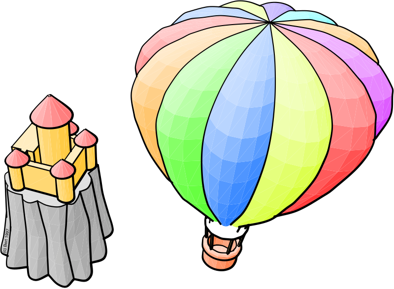
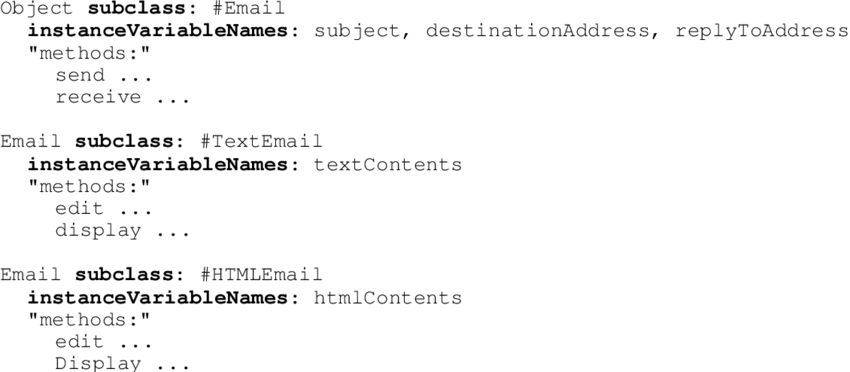

Smalltalk (1969)
O Smalltalk é uma linguagem de programação orientada a objetos que foi criada por Alan Kay, Dan Ingalls e Adele Goldberg no Xerox Palo Alto Research Center (PARC) na década de 1970. Ela é conhecida por sua abordagem inovadora e influente no paradigma de programação orientada a objetos.
O principal motivo por trás da criação do Smalltalk foi fornecer uma linguagem de programação que permitisse a modelagem de sistemas complexos de forma intuitiva e flexível.

O Smalltalk introduziu o conceito de programação orientada a objetos, no qual os programas são estruturados em torno de objetos, que representam entidades do mundo real. Além disso, o Smalltalk também trouxe a ideia de ambiente de desenvolvimento integrado (IDE), no qual os programadores podem criar, testar e depurar seus programas em um ambiente interativo.
Atividade desenvolvida como extensão no projeto
PACEX/Mundo Tech do curso de análise e Desenvolvimento de Sistemas
Unipar - Cascavel